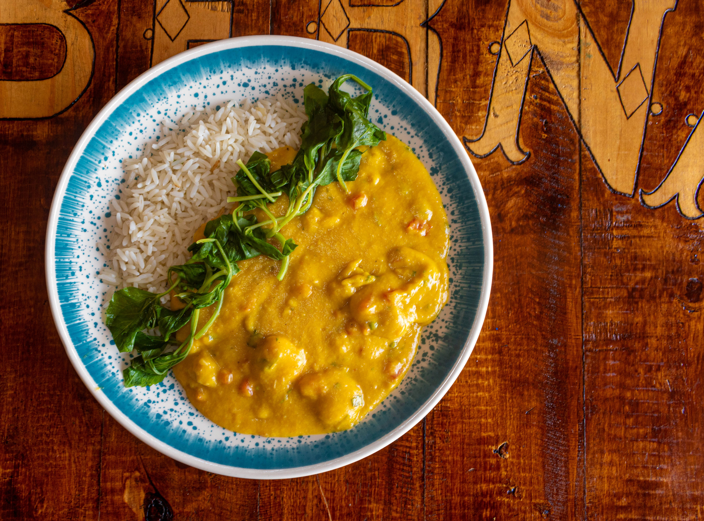

Curry-Bowl

Zubereitung
1. Reis in ca. 400 ml kochendem Salzwasser nach Packungsanweisung garen. Zwiebel schälen und würfeln.
2. Öl in einem Topf erhitzen, Zwiebel und Currypaste darin ca. 2 Minuten andünsten. Mit Kokosmilch ablöschen.
Gemüsemischung zugeben, aufkochen und ca. 3 Minuten bei mittlerer Hitze köcheln. Mit Salz, Pfeffer und Zitronensaft abschmecken. Mit dem Reis anrichten.
2. Öl in einem Topf erhitzen, Zwiebel und Currypaste darin ca. 2 Minuten andünsten. Mit Kokosmilch ablöschen.
Gemüsemischung zugeben, aufkochen und ca. 3 Minuten bei mittlerer Hitze köcheln. Mit Salz, Pfeffer und Zitronensaft abschmecken. Mit dem Reis anrichten.
Rezept erstellt von
Jens